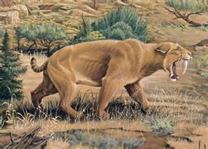

Saber-Tooth cats
By Olakunle Salami
- 
-

{kind=link}
Along with the Woolly Mammoth, the Saber-Tooth Tiger was one of the most famous megafauna mammals of the Pleistocene epoch. What most people refer to as the Saber-Tooth Tiger was actually a species of prehistoric cat known as Smilodon fatalis, which was only distantly related to modern lions, tigers and cheetahs.
{kind=link}
The Smilodon is by far the most famous saber-toothed cat. The most obscure member of the Smilodon family was the small Smilodon gracilis which weighed up to 150 pounds. The North American Smilodon fatalis is what people mean when they say sabertooth tiger. It is slightly bigger at 200 or so pounds, and the South American Smilodon populator was the most imposing species of them all, the males weighing as much as half a ton. We know that Smilodon fatalis regularly crossed paths with the Dire Wolf
The sabertooth cat's curving canines are measured to be close to 12 inches in the largest Smilodon species. Although they were surprisingly brittle and easily broken, and were often sheared off entirely during close combat, which never grow back again. These cats could open their jaws to a worthy angle of 120 degrees, or about twice as wide as a modern lion. They couldn't bite down on their prey with much force, because they needed to protect their canines against breakage.
{kind=link}
Smilodons pounced on its prey from the low branches of trees, plunged its canines deep into the neck or flank of its unfortunate victim, and then withdrew to a safe distance as the wounded animal flopped around and eventually bled to death.